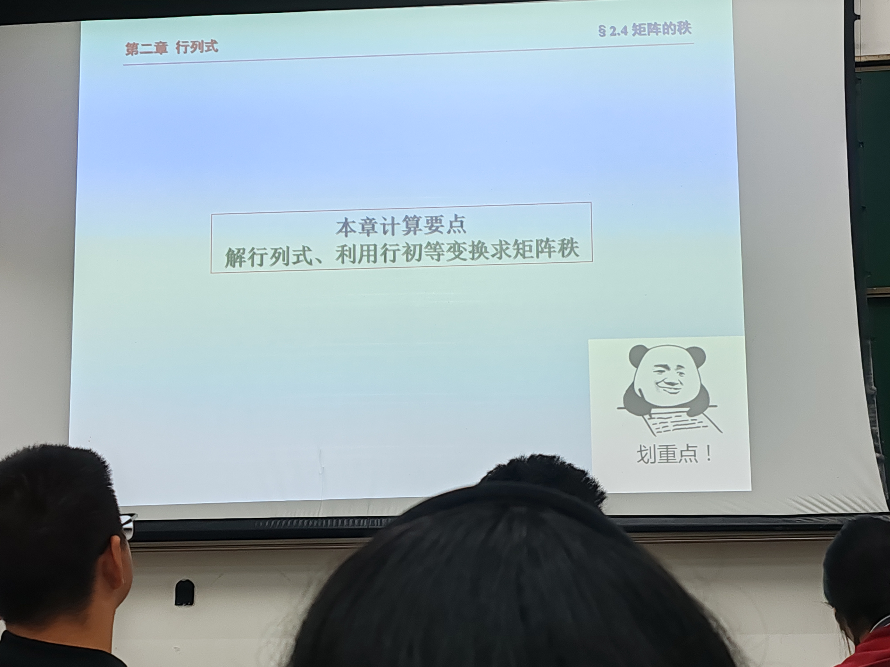
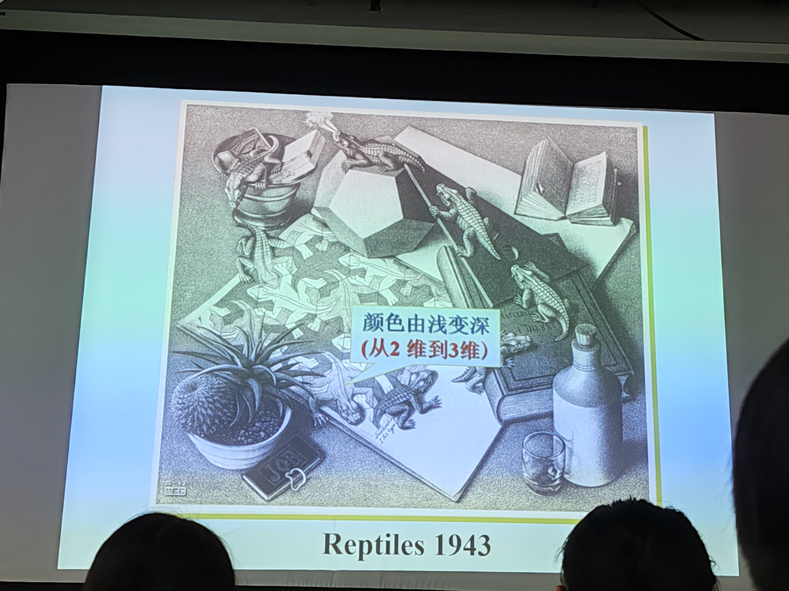
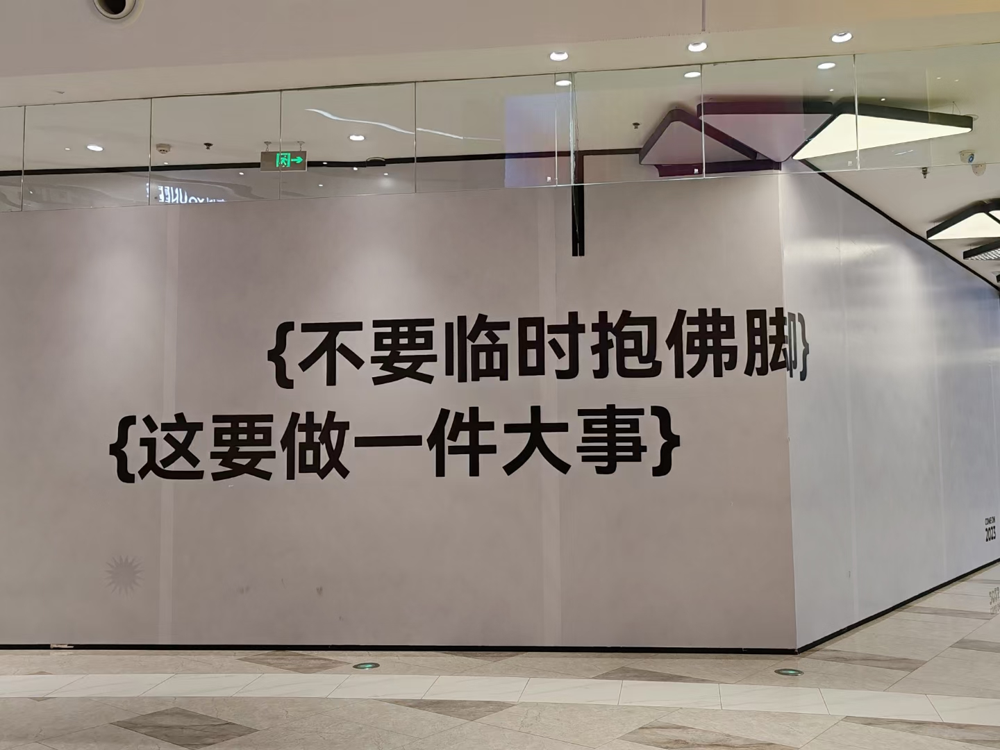

碎碎念时间到
#喜欢好天气

#奥本海默！！！人物好多，有点记不住（历史又不好）。虽然整场看下来，有点晕，两条时间线的展示，确实绕。但是丝毫我影响我的兴奋。
悄悄偏个题：男主好帅！！！
#音乐节
我什么时候能会一种乐器，，可能下辈子吧
#这个小车车好可爱，(❤ ω ❤)
#微积分
到底谁能学会！！！
#好好好，我是fw
感受线性代数的乐趣...好好好

#好耶好耶！！！有趣性来了 
#逛街遇到人生真谛？？？！！！ 
#强推马伯庸老师的《长安的荔枝》（srds以前看的，有点忘记了剧情了。但是肯定很好看）
#好吧，yysy，我看这些名人作品，真的想睡觉...... 推理小说好看！东野圭吾！东野圭吾！